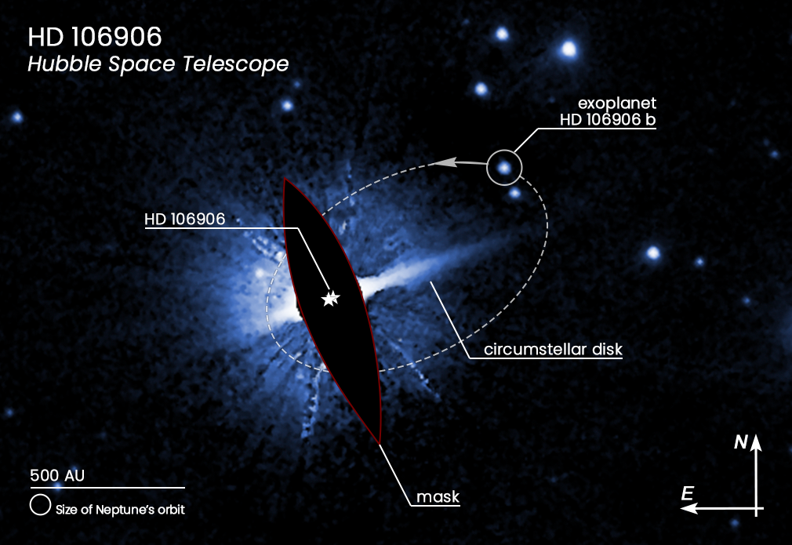
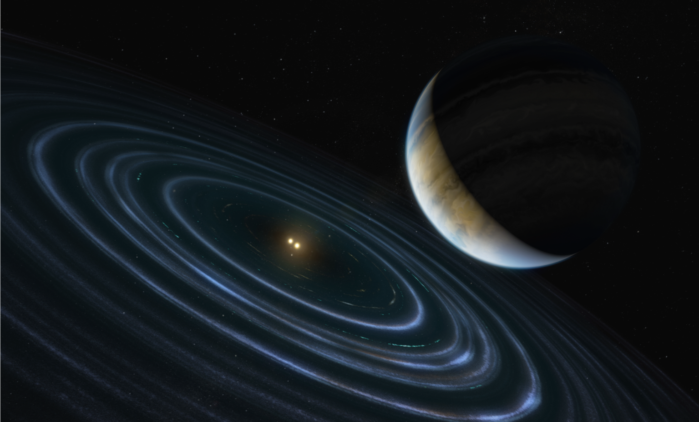

一颗绕着一颗336光年远的双星运行的不太可能的行星，可能会为一个离我们更近的星球提供线索：太阳系中一个被称为第九行星的遥远的假设天体。
这是天文学家第一次能够测量出一颗巨大的类木星行星的运动，它的运行轨道远离其主星和可见的碎片盘。这个碎片盘类似于海王星以外由小型冰状天体组成的柯伊伯带。在我们自己的太阳系中，被怀疑的第九大行星也会位于柯伊伯带之外的一个类似的奇怪轨道上。尽管对第九大行星的搜寻仍在继续，但这颗系外行星的发现证明了这种奇怪的轨道是可能存在的。
“与我们的太阳系相比，这个系统可能是独一无二的，”该论文的第一作者、加州大学伯克利分校的阮明治（Meiji Nguyen）解释说。“这颗行星与它的主星距离非常遥远，轨道偏置且高度偏离，就像对第九大行星的预测一样。这就引出了一个问题:这些行星是如何形成并演化成现在的样子的。”
这颗气态巨星所在的星系只有1500万年的历史。这表明，我们的第九大行星——如果它确实存在的话——可能在我们拥有46亿年历史的太阳系的演化中很早就形成了。
2013年，在智利阿塔卡马沙漠的拉斯坎帕纳斯天文台，用麦哲伦望远镜发现了一颗名为HD 106906 b的11颗木星质量的系外行星。然而，天文学家对这颗行星的轨道一无所知。这需要一些只有哈勃太空望远镜才能做到的事情：在14年的时间里以非常精确的精度收集流浪行星的运动数据。研究团队使用了哈勃档案馆的数据为这一运动提供了证据。
这颗系外行星与它的一对明亮年轻的主恒星相距极远——超过地球到太阳距离的730倍，或近680亿英里。如此大的距离使得在哈勃观测的如此短的时间内确定15000年的轨道变得非常具有挑战性。鉴于遥远的母恒星的引力很弱，这颗行星沿着它的轨道移动得非常缓慢。
哈勃望远镜团队惊讶地发现，这个遥远的星球有一个细长、非常偏离轨道的极端轨道，位于环绕系外行星双星主恒星的碎片盘之外。碎片盘本身看起来很不寻常，可能是由于这颗任性的行星的引力牵引。
那么，这颗系外行星是如何到达如此遥远且倾斜异常的轨道的呢？普遍的理论是，它是在离恒星更近的地方形成的，大约是地球到太阳距离的三倍。但是在系统气体盘内的拖曳导致了行星的轨道衰减，迫使其向恒星对向内迁移。旋转的双星的引力作用把它踢到一个偏心轨道上，几乎把它扔出了系统，扔进了星际空间的真空中。然后，一颗从系统外经过的恒星稳定了这颗系外行星的轨道，阻止它离开自己的主系统。
2019年，来自智利圣地亚哥欧洲南方天文台的团队成员罗伯特·德罗萨(Robert De Rosa)和加州大学的保罗·卡拉斯(Paul Kalas)利用欧洲航天局的盖亚(Gaia)调查卫星的精确距离和运动测量，确定了可能经过的恒星。
在2015年发表的一项研究中，卡拉斯领导的团队发现了这颗失控行星行为的间接证据：该系统的碎片盘是极不对称，而不是一个圆形的“披萨饼”状的物质分布。碎片盘的一侧相对于另一侧被截断，并且它在垂直方向上也受到干扰，而不是像在恒星的另一侧看到的那样局限于狭窄的平面。
“这种想法是，每当行星接近最接近双星时，它就会搅动碎片盘中的物质。”德罗萨解释道。“所以每次行星经过时，它都会截断碎片盘，把它推到一边。在我们知道这颗行星的轨道之前，这一场景已经在类似轨道上的行星的模拟系统中进行了测试。”
“这就像你到达了车祸现场，而你正试图重建发生的一切。”卡拉斯解释说。“是经过的恒星扰动了行星，还是行星扰动了碎片盘？是中间的双星首先扰动了行星，然后又扰动了碎片盘吗？还是路过的恒星同时扰乱了行星和碎片盘？这是一项天文学的侦探工作，收集我们需要的证据，为这里发生的事情找到一些可信的故事线索。”
HD 106906 b怪异的轨道在某些方面与导致假想的行星9最终进入我们太阳系外围的原因相似，远远超出了其他行星的轨道，也超出了柯伊伯带。第九大行星可能形成于太阳系内部，并因与木星的相互作用而被逐出太阳系。然而，木星——太阳系中众所周知的重达800磅的大猩猩——很有可能将第九大行星甩出冥王星之外。经过的恒星可能通过推动轨道远离木星和太阳系内部的其他行星而稳定了这颗被毁坏的行星的轨道。
卡拉斯说:“就好像我们自己的行星系统有一台时间机器，可以追溯到46亿年前，看看当我们年轻的太阳系处于动态活动状态，万物被推挤和重新排列的时候会发生什么。”
迄今为止，天文学家仅对第九行星有间接证据。他们在海王星之外发现了一群小型天体，与太阳系的其他天体相比，它们运行的轨道不同寻常。一些天文学家说，这种结构表明，这些物体是在一颗巨大的、看不见的行星的引力作用下聚集在一起的。另一种理论认为，不存在一个巨大的扰动行星，但这种不平衡是由多个小得多的物体共同产生的引力影响造成的。另一种理论是，第九大行星根本不存在，较小星体的聚集可能只是一种统计异常。
科学家们计划利用美国宇航局即将推出的詹姆斯·韦伯太空望远镜，获取HD 106906 b的数据，以详细了解这颗行星。“你可能会问：这颗行星周围有自己的碎片系统吗?它是否会在每次靠近主恒星时捕获物质？你可以用韦伯的热红外数据来测量。”德罗萨说。“此外，在帮助了解轨道方面，我认为韦伯将有助于确认我们的结果。”
因为韦伯望远镜对较小的、土星质量的行星很敏感，它可能能够探测到其他从这个和其他内部行星系统中被喷射出来的系外行星。阮解释说：“有了韦伯望远镜，我们就可以开始寻找更老更暗的行星，”韦伯望远镜独特的灵敏度和成像能力将为探测和研究这些非常规行星和星系提供新的可能性。
该团队的发现发表在2020年12月10日的《天文杂志》上。
哈勃太空望远镜是NASA与ESA（欧洲航天局）之间国际合作的项目。位于马里兰州格林贝尔特的NASA戈达德太空飞行中心负责管理该望远镜。位于马里兰州巴尔的摩的太空望远镜科学研究所（STScI）负责哈勃的科学操作。 STScI由位于华盛顿特区的天文学研究大学协会为NASA运营。
参考来源：
https://www.nasa.gov/feature/goddard/2020/hubble-pins-down-weird-exoplanet-with-far-flung-orbit